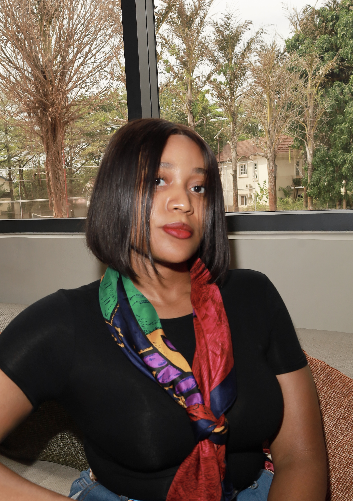

Mary-Delphine Okoye
Trade · Economics · Africa
I am building a career in international trade and economic development: trade intelligence, institutional affairs, and development finance, because those are the fields where policy becomes infrastructure, and infrastructure becomes the future of African economies. Every role, every research brief, every conversation has been a step in the same direction.
Read moreFederal Capital Territory Administration, Abuja, Nigeria
Mar 2025 – Dec 2025
World Trade Center Lagos, WTCA Global Network. Trade intelligence, institutional affairs, and stakeholder engagement.
Oct 2025 – Mar 2026
Exploring diaspora investment and SME financing across African markets.
Mar 2026
United Nations Conference on Trade and Development.
Jun 2026
I studied Nutrition and Dietetics at Babcock University, which is, perhaps, an unusual entry point for a career in trade and development finance. But the discipline matters less than the instinct behind it: a habit of asking what systems are made of, how they fail, and what it would take to make them work better. That instinct is what eventually pulled me toward economics.
My first real exposure to how institutions operate came through a posting with the Federal Capital Territory Administration in Abuja. It was an early education in public sector rhythms: the bureaucratic structures, the informal decision-making, the distance between policy language and operational reality. That gap between intent and implementation is something I now pay close attention to.
"Policy written in capitals does not always reach the ground. That distance is where the most important work happens."
My internship at World Trade Center Lagos was where that instinct became practice. Working within the WTCA global network, I spent time on trade intelligence, drafting institutional correspondence, and handling stakeholder engagements across African and international trade contexts. It was a great opportunity to see how organisations work together to facilitate trade, investment, and business growth.
I have continued building through the McKinsey Forward Programme and formal training with UNCTAD on the relationship between trade and climate commitments, two domains that are converging faster than most trade frameworks have caught up with.
I am investing serious time and intention into building the knowledge and experience to become a credible professional in international trade and development. The direction is clear, the work is ongoing.
Three domains, deeply interconnected. The question running through all of them: how do African economies build the institutional and financial infrastructure that turns potential into durable growth?
Intra-African trade remains dramatically underutilised relative to the continent's economic size. I follow the architecture of AfCFTA implementation, the politics of regional value chains, and the structural conditions that determine whether trade translates into industrial development or simply changes the direction of extraction.
African markets are not short of capital interest. They are short of the structures that make capital deployable. I am building my understanding of diaspora investment flows, SME financing gaps, and how multilateral institutions like Afreximbank, the EIB, and the AfDB approach resource allocation in practice. These are the questions I am most seriously working to understand.
Institutions move through relationships. Through my work within the WTCA global network, I gained early exposure to stakeholder engagement, institutional correspondence, and external affairs. I am developing an understanding of how organisations build credibility and sustain partnerships across borders, and this is the professional environment I am deliberately moving deeper into.
Across just four African countries, SMEs generate over $362 billion in economic value annually. Yet most of that activity stays invisible to diaspora investors who want in but have nowhere trusted to go. This piece maps the gap and argues for a new kind of infrastructure: vetted, government-backed, and built for the investor who has the capital but not the confidence.
LinkedIn · 2026
Read on LinkedInFree trade without industrial policy is a road with no destination. What would it actually take for AfCFTA to produce the structural transformation it promises?
In progress
The narrative around African investment risk is outdated. A closer look at where the real barriers lie and which ones can actually be moved.
In progress
I am always interested in connecting with professionals, institutions, and researchers working in trade, development, and economic growth across Africa. If we share similar interests in intra-African trade, economics, and development, I would love to connect.